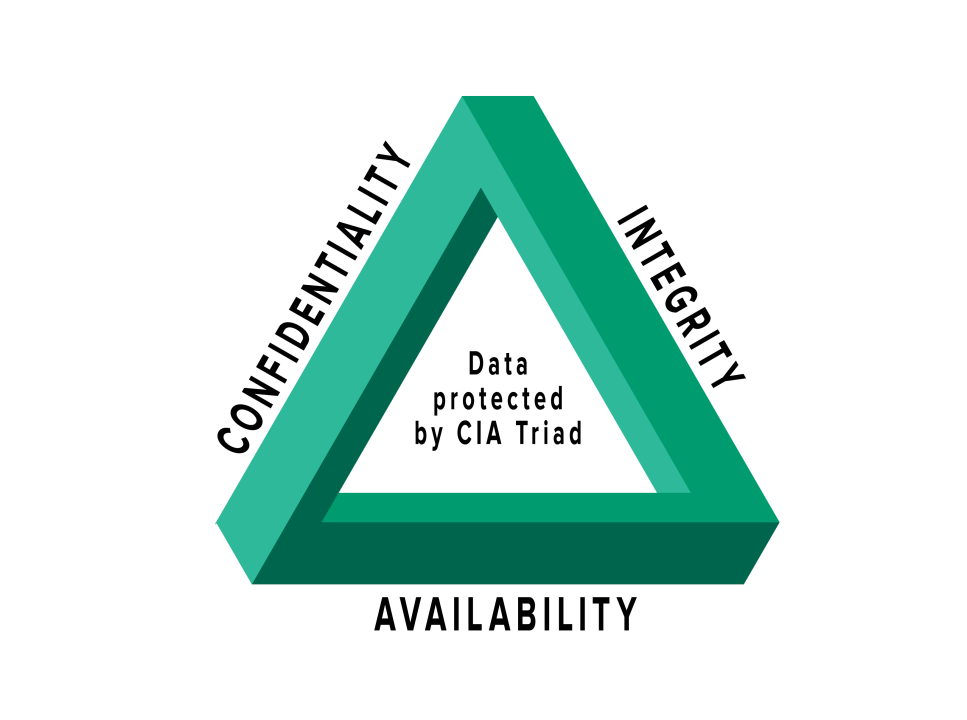
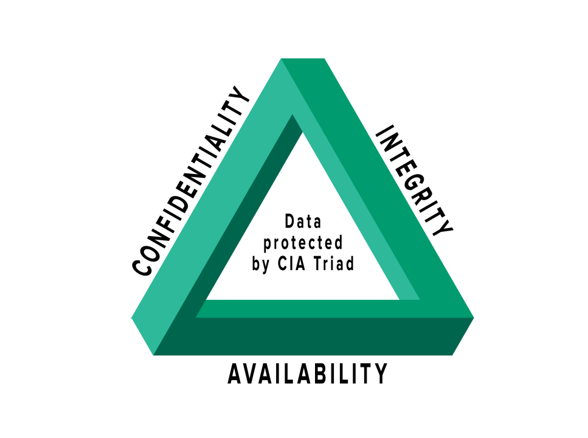

What is Cybersecurity?
Cybersecurity refers to protecting computers, networks, and data from unauthorized access and manipulation.
The three pillars of Cybersecurity are often referred to as Confidentiality, Integrity, and Availability. Enacting the principles expressed by these pillars involves a variety of methods, from anti-virus software to 2 factor authentication applications.
Software developers themselves can also prevent cyber attacks in multiple ways, such as following secure coding practices, using strong encryption algorithms, and regularly updating their software.
 

Why is it important?
Overall, cybersecurity is important because it helps protect our personal information, businesses, and systems from harm.
More specifically:
Protecting Personal Information: It safeguards sensitive data like passwords, credit card numbers, and personal details from being stolen.
Preventing Financial Loss: Strong cybersecurity helps businesses avoid costly attacks that can lead to financial losses, fines, or loss of customers.
Maintaining Privacy: It ensures that private information stays confidential and isn't misused or shared without permission.
Ensuring Safety: Cybersecurity protects critical infrastructure, such as power grids and hospitals, from attacks that could disrupt essential services.
Building Trust: When organizations prioritize cybersecurity, it fosters trust among customers and partners, showing that they value security.